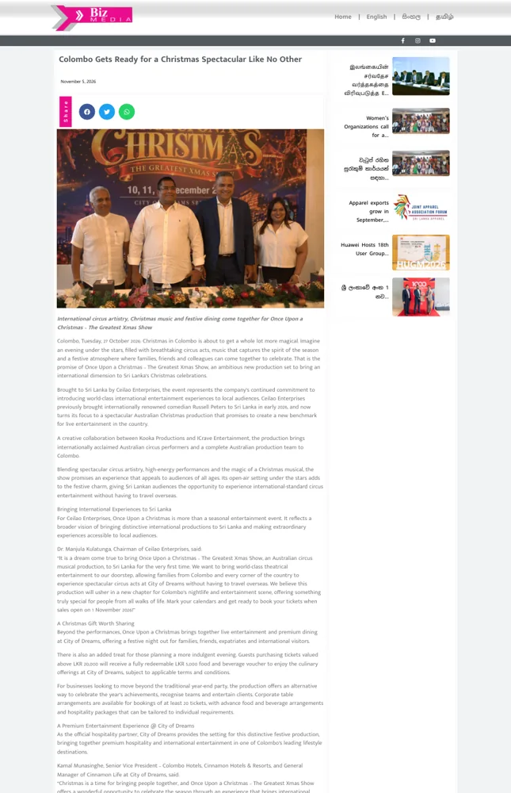
Bizmediaa · 2026-11-05
Colombo Gets Ready for a Christmas Spectacular Like No Other
Coverage of the Australian circus musical, its creative partners, family entertainment and festive hospitality in Colombo.
CEILAO ENTERPRISES / MEDIA BRIEFING
On 28 October 2026, Ceilao Enterprises presented Once Upon a Christmas – The Greatest Xmas Show at Cinnamon Life at City of Dreams, Sri Lanka, bringing together its hospitality and sponsorship partners and members of the media.

01 / THE ANNOUNCEMENT
The media briefing introduced an international Christmas production created by Kooka Productions and ICrave Entertainment, brought to Sri Lanka by Ceilao Enterprises. The show combines circus artistry, music and festive entertainment, with performances scheduled for 10–12 December 2026.
The official conference agenda featured Ceilao Enterprises Chairman Dr. Manjula Kulatunga, Mr. Kamal Munasinghe representing the official hospitality partner Cinnamon Life at City of Dreams, Ms. Annya Gunasekara representing principal sponsor Australian Migration Consultants, and Mr. Saman Jayasena as Event Manager.
The supplied media material documents coverage in English and Sinhala across print, online and broadcast channels. The archived clippings below are supplied for convenient reference alongside publisher links.
VIEW OUR EVENTS ↗02 / PRESS COVERAGE
Browse the media coverage included in the press conference archive. Every supplied online source is linked, with a local clipping where one is available.

Bizmediaa · 2026-11-05
Coverage of the Australian circus musical, its creative partners, family entertainment and festive hospitality in Colombo.
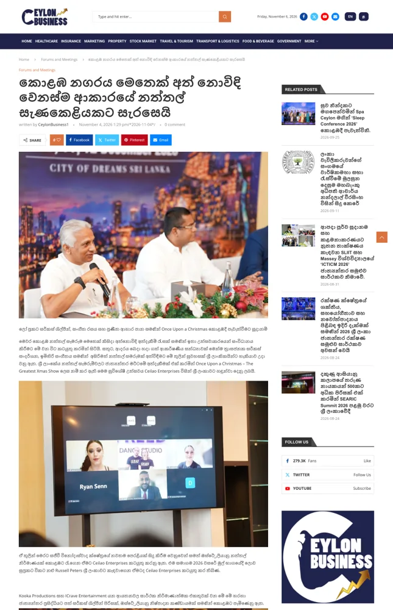
Ceylon Business (Sinhala) · 2026-11-04
Sinhala-language coverage of the festive production and the media announcement at City of Dreams Sri Lanka.
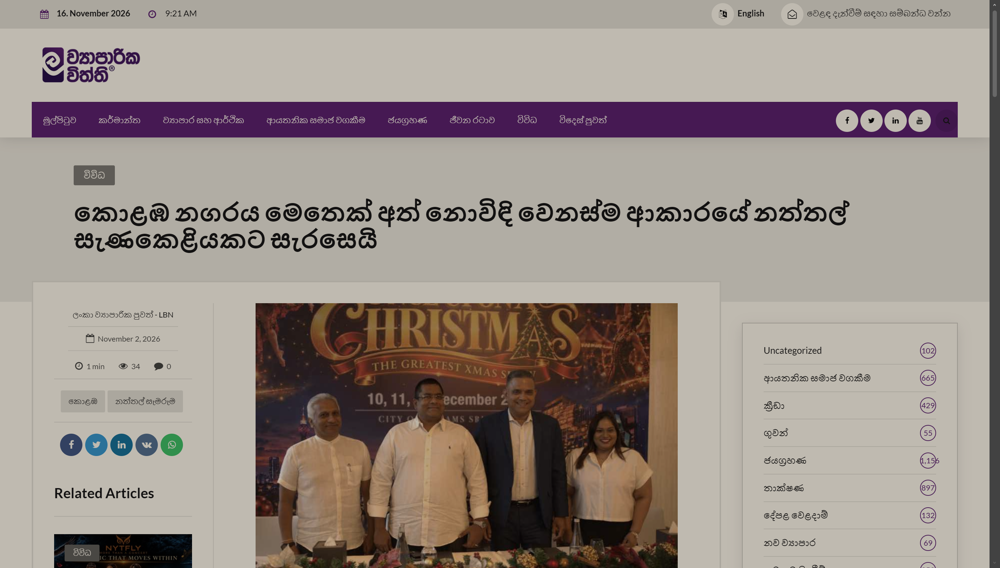
Lanka Business News (Sinhala) · 2026-11-02
Sinhala-language reporting on Once Upon a Christmas and the Australian entertainment collaboration.
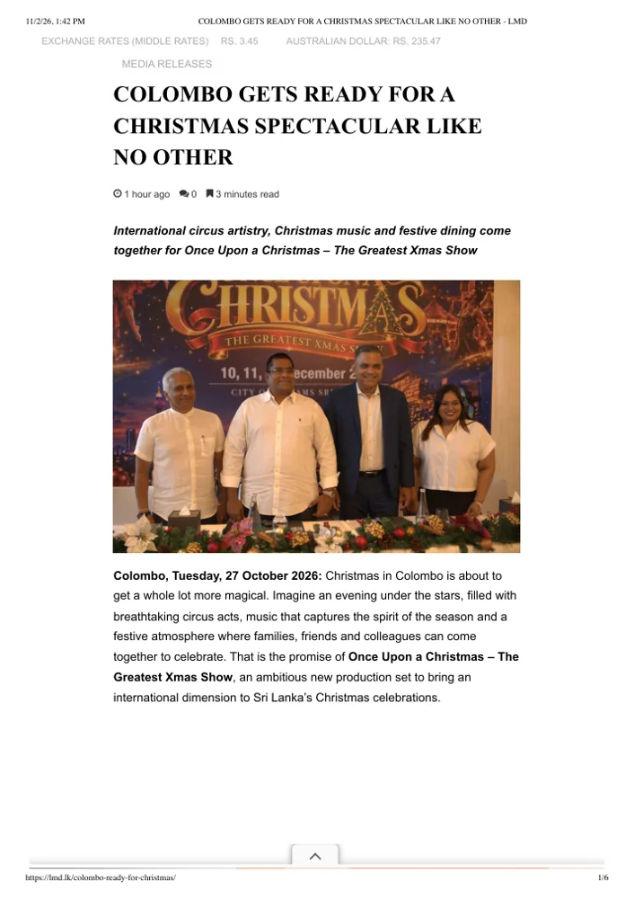
LMD · NOV 2026
LMD reports on the international circus performers, music and festive dining featured in the production.
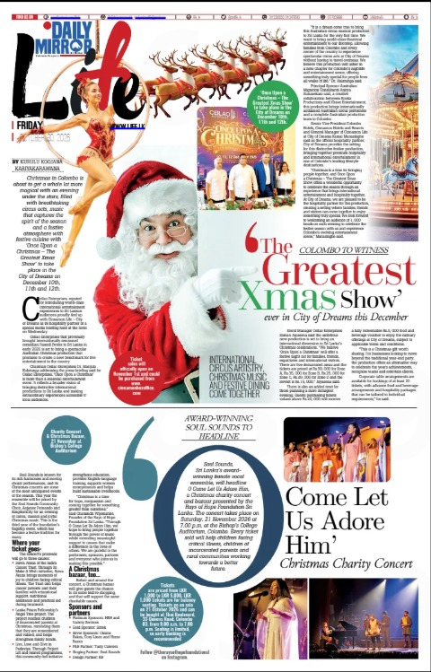
Life Online / Daily Mirror Life · 2026-10-30
A report from the media briefing featuring Ceilao Enterprises, the principal sponsor and Cinnamon Life at City of Dreams.
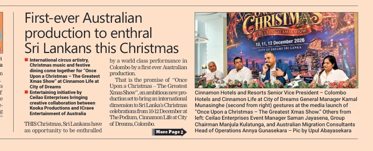
Daily FT · 2026-10-30
Front-page reporting on the media launch, the Australian production team and the December performances in Colombo.
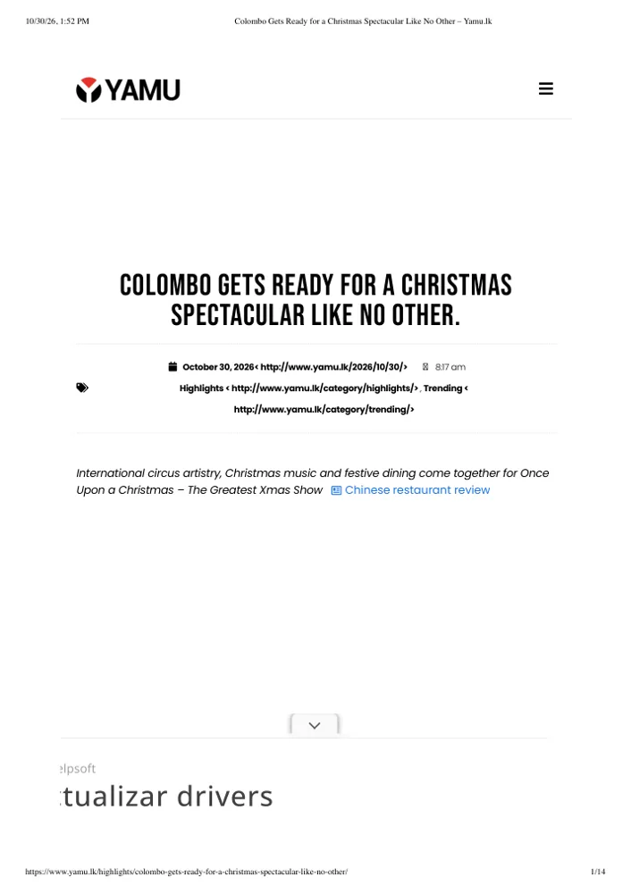
Yamu.lk · 2026-10-30
Yamu highlights the performers, production partners and festive atmosphere of the forthcoming show.
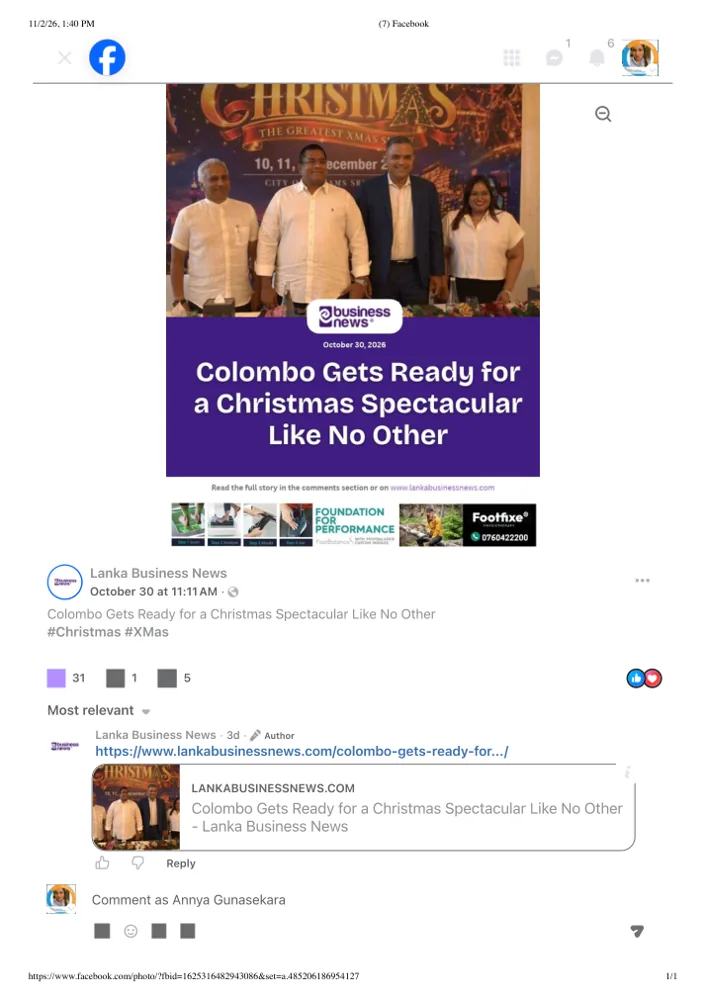
Lanka Business News (English) · 2026-10-30
English-language feature on the festive production, presented through the supplied media materials.
Publisher access may be restricted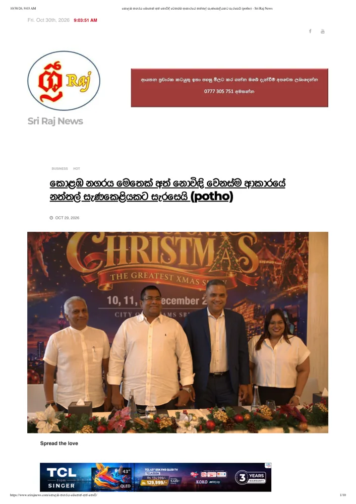
Sri Raj News · 2026-10-29
Sinhala-language coverage of the press announcement, with reporting and photographs.
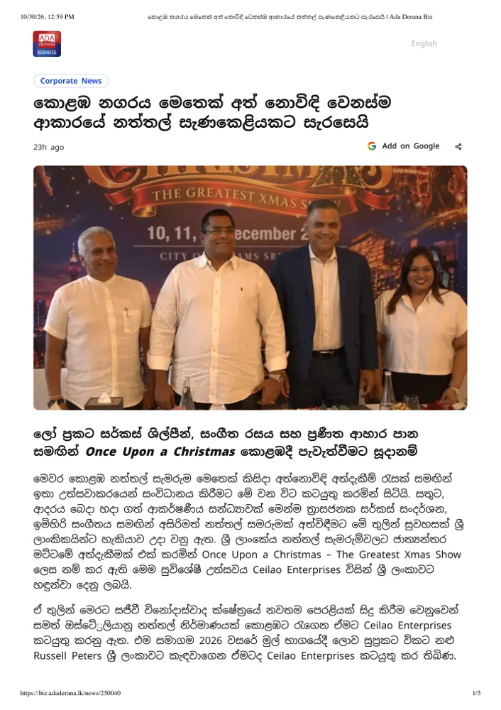
Ada Derana Biz · 2026-10-29
Sinhala-language report supplied in the press archive. Online article could not be independently accessed by the automated checker.
Publisher access may be restrictedDaily Mirror · NOV 2026
A supplied print-page feature on the launch and the upcoming performances, preserved as an image clipping.
Lanka Business News / Facebook · 2026-10-30
Supplied Facebook post snapshot. Platform link may require sign-in and could not be verified automatically.
Publisher access may be restricted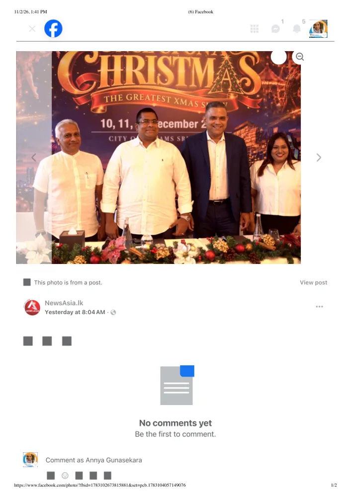
NewsAsia.lk / Facebook · NOV 2026
Supplied screenshot of Facebook coverage. The external post may require a Facebook account.
Publisher access may be restricted03 / BROADCAST ARCHIVE
Three audio recordings from 2 November 2026, supplied with the press conference materials. One recording is marked as partial.
2 November 2026
DOWNLOAD MP3 ↓2 November 2026
DOWNLOAD MP3 ↓2 November 2026 · Partial recording
DOWNLOAD MP3 ↓05 / GET IN TOUCH
For interviews, event information and media partnerships, contact Ceilao Enterprises.
RETURN TO THE NEWSROOM ↗